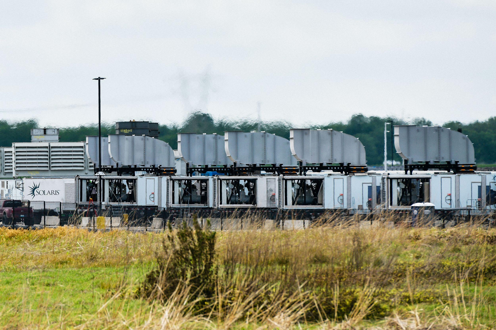

다름 아닌 일론 머스크
미국 데이터센터에 대해서 좀만 찾아보면 알 수 있는 사실인데, 지역 주민들의 원성을 사는, 실제로 문제가 되는 데이터센터는 크게 2가지다.
1. 상장조차 하지 않은 하꼬 유령회사 거
2. 일론 머스크 거

예를 들어 머스크네 데이터센터에 관련된 2가지 사건을 보자.
1. 일론 머스크는 미국 미시시피주 사우스헤이븐에 초대형 AI 데이터센터를 건설함.
전기가 부족하니까 인근 지역에 천연가스 발전기들을 설치해서 직접 전기를 생산하기 시작함.
2. 그런데 발전기에서 엄청난 소음이 발생하기 시작함.
인근 주민들은 비행기 엔진이 계속 돌아가는 것 같다고 호소함.
밤에도 소음이 멈추지 않아 불면증, 두통, 이명을 호소하는 주민까지 나타남.
3. 주민들은 환경오염에 시달림.
실제로 일부 주민들은 천식 악화와 기침을 호소했으며, 발전소 가동과의 관련성을 의심함.
4. 참다못한 주민들이 시청에 항의하고 집단소송까지 제기함.
5. 시장한테 호소하니까 '걍 머스크한테 집 파시죠ㅋ' 라고 대답.
6. 머스크네 회사는 '주택 감정가'의 110%라며 1주택 당 17만 5천 달러 + 소송 권리 포기를 제시했는데,
지역 내 타 주택 가격은 최소 25만 ~ 30만 달러 이상이라고 함.
즉 '이미 바로 옆에 데센 있어서 니네집 개똥값 됐는데 어쩌쉴? 니가 똥값에 안팔고 배겨?' 를 시전한 것
사실 다른 M7의 데이터센터는 규제를 다 지켜서 이런 피해가 덜한데, 머스크는 걍 벌금을 내고 규제를 안 지키기 때문에 이런 일이 벌어진다.
예컨대 일론 머스크는 미국 테네시주 멤피스에 초대형 AI 데이터센터인 Colossus 2를 건설했는데, 규제를 전혀 지키지 않아 벌금으로 610만 달러를 얻어맞았다.
근데 사실 머스크가 하는 사업 규모 상 610만 달러(약 90억 원)은 너무나도 가벼운 금액이기 때문에, 그냥 '어 불법 맞아 벌금 낼게 그래서 니가 뭘 할 수 있는데ㅋㅋ' 하는 식으로 사업을 이어가고 있다.
그래서 미국인들은 벌금으로 안 끝나게 미민당에 몰표를 줬다고 한다.
이러니까 미국인들이 데이터센터를 결사반대 할 수밖에 없다. 우리 집 근방에 지어지면 걍 집을 개똥값에 팔고 이사가야 하는 수준이 돼 버린다.
출처 :
CBS News (2026.10.05): https://www.cbsnews.com/news/mississippi-elon-musk-xai-data-center-power-plant-noise/
Mississippi Today (2026.10.15): https://mississippitoday.org/2026/10/15/facing-lawsuits-elon-musks-spacexai-offers-to-buy-homes-homes-near-southaven-data-centers/
Mississippi Today (2026.11.02): https://mississippitoday.org/2026/11/02/federal-judge-southaven-data-center-gas-turbines-must-have-air-permits/
미국 SEC 공시 : https://www.sec.gov/Archives/edgar/data/1181412/000162828026066880/spcx-20260930.htm
기존 idc랑 ai 데센이랑 전기랑 물먹는게 차원이 다름